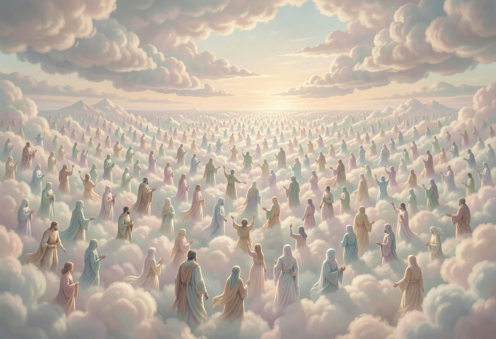

Rüyada Kalabalık Görmek Ne Anlama Gelir?
Rüyalar, bilinçaltımızın bize mesaj göndermesinin en etkileyici yollarından biridir. Özellikle kalabalık görmek, kişinin sosyal yaşamı, psikolojik durumu ve bilinçaltındaki arzuları hakkında önemli ipuçları barındırabilir. Peki, rüyada kalabalık görmek ne anlama gelir? Bu, yalnızlık korkusunun bir yansıması mı yoksa hareketli bir sosyal hayatın habercisi mi?
Kalabalık Rüyalarının Genel Anlamı
Rüyada kalabalık görmek genellikle kişinin sosyal çevresiyle olan ilişkisini ve toplumsal bağlarını simgeler. Bu rüya, kişinin kendini nasıl hissettiğiyle doğrudan bağlantılı olabilir. Rüyanın detaylarına göre farklı yorumlar yapmak mümkündür:
- Eğer rüyada mutlu bir kalabalık içindeyseniz, bu, sosyal hayatınızın tatmin edici olduğunu, insanlarla iyi ilişkiler kurduğunuzu ve toplum içinde kabul gördüğünüzü gösterebilir.
- Kalabalık içinde sıkılmış veya bunalmış hissediyorsanız, bu durum, sosyal hayatınızda bir baskı hissettiğinizi, insanlarla olan ilişkilerinizin yorucu hale geldiğini veya kendinize yeterince zaman ayıramadığınızı ifade edebilir.
- Tanımadığınız bir kalabalık içindeyseniz, bilinçaltınız, yeni sosyal ortamlara girme isteğinizi veya bilinmeyen bir duruma karşı duyduğunuz endişeyi yansıtıyor olabilir.
Yalnızlık Korkusunun Bir İşareti mi?
Bazı durumlarda rüyada kalabalık görmek, kişinin bilinçaltında yalnızlık korkusu taşıdığını gösterir. Özellikle rüya sahibi, kalabalığın içinde kendini yalnız hissediyorsa, bu durum, gerçek hayatta sosyal bağlarının yeterince güçlü olmadığını düşündüğünü gösterebilir. Yalnızlık korkusu olan bireyler, sosyal çevrelerini kaybetmekten veya dışlanmaktan endişe duyabilirler.
Sosyal Hayatın Bir Yansıması mı?
Rüyada kalabalık görmek, aktif bir sosyal yaşantıya sahip olan kişilerde, bu yoğunluğun bilinçaltına yansıması olabilir. Özellikle son dönemde sıkça sosyal etkinliklere katılıyorsanız, yeni insanlarla tanışıyorsanız veya iş ve sosyal hayatınız çok hareketliyse, rüyada kalabalık görmek bunun doğal bir yansımasıdır.
Rüyada Kalabalıkla İlgili Farklı Senaryolar
- Eğlence ya da kutlama ortamında bir kalabalık görmek: Mutluluk, başarı ve sosyal tatmin duygusuna işaret edebilir.
- Kaotik veya kargaşa içinde bir kalabalık görmek: Kaygı, belirsizlik veya kontrol edilemeyen bir duruma karşı duyulan endişeyi ifade edebilir.
- Kalabalıkta kaybolmak: Hayatta yönünüzü kaybetme korkusu veya kendinizi toplum içinde yetersiz hissetme duygusuyla bağlantılı olabilir.
Sonuç
Rüyada kalabalık görmek, kişinin ruh haline ve sosyal yaşantısına bağlı olarak farklı şekillerde yorumlanabilir. Eğer bu rüyalar sizi rahatsız ediyorsa, sosyal ilişkilerinizi gözden geçirerek kendinizi daha iyi hissettirecek adımlar atabilirsiniz. Öte yandan, eğer olumlu bir anlam taşıyorsa, bu rüyalar sosyal yaşantınızın tatmin edici olduğunun bir göstergesi olabilir. Rüyalarınızı analiz ederek içsel dünyanızı daha iyi anlamanız mümkündür.